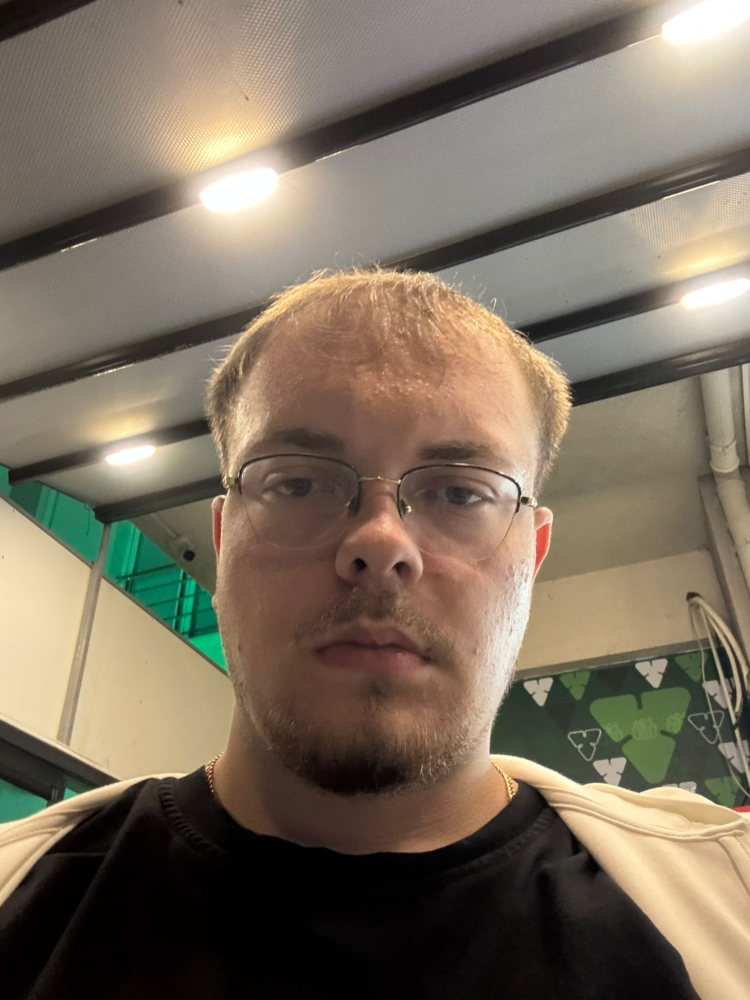

Merhaba, Ben Ege Ülker 👋
Bilişim Sistemleri ve Teknolojileri öğrencisi. Modern web ekosistemleri, nesne yönelimli sistem mimarileri ve veritabanı optimizasyonuna tutkuyla odaklanan junior yazılım geliştirici.

Akademik Yolculuk & Vizyon
Teorik mühendislik temellerini pratik kod bloklarıyla pekiştiriyor, bilişim sistemlerinin tasarımından dağıtımına kadar her evresini merakla inceliyorum.
Doğu Akdeniz Üniversitesi
Bilişim Sistemleri ve Teknolojileri
3. Sınıf Lisans Öğrencisi • 2022 - 2026 (Beklenen)
Mühendislik temelleri, algoritma karmaşıklığı analizi ve sistem analizi yaklaşımlarını kapsayan yoğun bir lisans müfredatı takip ediyorum.
İlgi Alanları & Yaklaşım
Sistem Mimarisi & Açık Kaynak
- check_circle Yazılım Mimarisi: Temiz kod (Clean Code), SOLID ilkeleri ve modüler katmanlı mimarilerin temelleri.
- check_circle Açık Kaynak & Topluluk: Geliştirici ekosistemlerine katkı verme, dokümantasyon okuma ve ortak çalışma kültürü.
- check_circle Siber Güvenlik Farkındalığı: Güvenli kod yazma pratikleri, OWASP Top 10 temel açıkları ve ağ protokolleri ilgisi.
Yetenekler & Teknolojiler
Akademik projeler ve bağımsız çalışmalarımda aktif olarak deneyimlediğim teknoloji yığını ve geliştirme araçları.
Diller & Temel
Core Programming
Veritabanı & Sistem
Storage & Environments
Araçlar & Ortam
Workflow & Tooling
Projelerim & Çalışmalarım
Problemleri analiz edip temiz kod standartlarıyla hayata geçirdiğim seçili akademik ve kişisel çalışmalarım.

C++ OOP & Banka Sistemi Simülasyonu
Nesne yönelimli programlama prensipleri (Kalıtım, Sarmalama, Çok Biçimlilik) ile inşa edilmiş terminal tabanlı hesap, bakiye transferi ve güvenli işlem loglama mimarisi.

Öğrenci Forum & Bilgi Paylaşım Portalı
Üniversite öğrencileri arasında ders notları, soru paylaşımı ve anlık tartışmaları kolaylaştıran; hafif, modüler ve tamamen duyarlı (responsive) web prototipi.

Araç Bakım & Servis Takip Sistemi
Araçların periyodik servis aralıklarını, parça değişim kayıtlarını ve maliyet raporlamalarını takip eden ilişkisel veritabanı şeması ve sade kullanıcı paneli.
Birlikte Çalışalım veya Fikir Alışverişinde Bulunalım
Staj olanakları, açık kaynak proje işbirlikleri veya sadece teknoloji ve yazılım üzerine sohbet etmek için bir mesaj uzağınızdayım.